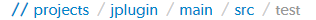

Helix server's primary task is to version files, so Swarm makes it easy to browse the depotA depot is a top-level unit of storage for versioned files within a Perforce server.. Start browsing by clicking the Files link in the top toolbar.
Swarm displays a list of breadcrumb links to help you quickly navigate to higher level directories quickly.

Click the Commits tab to display the list of changes made to files in the current directory, or any directories it contains. See Commits for more information.
Swarm creates links for files and directories wherever they appear in the Swarm UI.
Directories that start with a period, for example .git-fusion, are sorted to appear at the end of the list of directories. The .. link, when it appears, always appears first.
Similarly, files that start with a period, for example .htaccess, are sorted to appear at the end of the list of files.
When the zip command-line tool is available, Swarm can provide a ZIP archive for a file or folder within the Helix server. This makes it easy to get a copy of files without having to setup a client.
The Download .zip button does not appear if the zip command-line tool is not available.
When you click the Download .zip button, Swarm performs the following steps:
You might not see all of the above steps; Swarm caches the resulting ZIP archives so that repeated requests to the same file/folder can skip the sync/compress steps whenever possible.
If an error occurs while scanning, syncing, or compressing, Swarm indicates the error.
For information on the configuration for ZIP archives, see Archives configuration.
When the Show Deleted Files button is clicked, Swarm toggles the inclusion of deleted folders and files in the file display.
Deleted folders and files are presented slightly muted compared to non-deleted entries.
When Swarm is asked to display a file, if the file is a type that Swarm can display, Swarm presents the file's contents. Clicking the Open button displays the file content with no surrounding page markup. Clicking the Download button causes the file to be downloaded.
When a file is opened it will by default be truncated to 1 MB in size. This limit can be increased (or removed) via the Swarm configurables. See Files configuration for details. This limit does not apply to downloaded files.
Along with the file's name, Swarm displays the version number for the currently displayed file. For example, this heading indicates that version 2 of logo-lg.png is being displayed:
Every version of a file is available on the Commits tab.
If the version of a file being previewed has been deleted, the version number appears in red:
Swarm displays the contents of text files (including the Helix Core filetypes unicode and UTF16) with line numbers. When possible, syntax highlighting is applied to make identification of various elements within the file easier.
For more information on Helix Core filetypes, see File Types in P4 Command Reference.
Click Blame to add a column to the display that identifies the userid responsible for each line of the file.
Each userid presented is a link that, when clicked, displays the changelist that provided the associated text. Muted userids indicate that the associated text is from the same changelist as the line above. For example, the userid allison.c is responsible for lines 1, 10, and 12 in the screenshot above.
When you hover your pointer over a userid in the blame column, a tooltip appears displaying the associated changelist description.
When there are no lines displayed, for example when you are viewing empty or shelved files, the Blame button is disabled.
Swarm displays web-safe images.
The checkerboard background in this example is not part of the logo; it helps identify where transparency exists.
Many browsers can display SVG images with no additional plugins, so Swarm attempts to display SVG images rather than displaying the image's definition. When you use a browser that cannot natively display SVG images, you see the broken image icon.
When imagick (an optional module that integrates ImageMagick into PHP) is installed, Swarm can also display the following image formats: BMP, EPS, PSD, TGA, TIFF.
Swarm 2014.1 includes support for displaying select 3D model file types in the browser:
Supported file types include:
When Swarm can display a 3D model, it renders a generic grid stage and places the model in the center, scaled to make viewing straightforward. A toggle control appears in the top right: when enabled, you can control the view with the mouse, and when not enabled, permits auto-rotation to occur (when possible).
When possible, a second control appears allowing you to toggle between showing the model with surfaces, or just showing the model's wireframe.
For systems with hardware acceleration, if your browser supports WebGL and hardware acceleration is enabled, Swarm renders the model and enables auto-rotation.
For systems without hardware acceleration or WebGL, but your browser supports HTML5 canvas elements and JavaScript TypedArrays, Swarm renders the model but auto-rotation is disabled. Rendering is likely to be slow and rendering quality is likely to be low.
For browsers without HTML5 canvas elements and JavaScript TypedArrays, no rendering is attempted; instead, users see a message indicating that the browser is not supported.
It is possible to view other file types in Swarm, through the addition of additional modules, or by installing LibreOffice on the Swarm host.
When the file is a type that Swarm cannot display, Swarm presents the file's history, along with the Download button.
      |

|